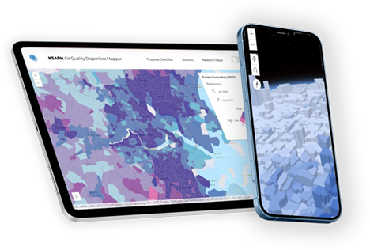

NSAPH
Air Quality Disparities Mapper
Progress Checklist
Feedback Form
Lab Website
Unpack the state of air
pollution in
your community
Select your preferred style of visualization
3D Surface Map
Bivariate Choropleth
Bubble Map
LAUNCH APP
